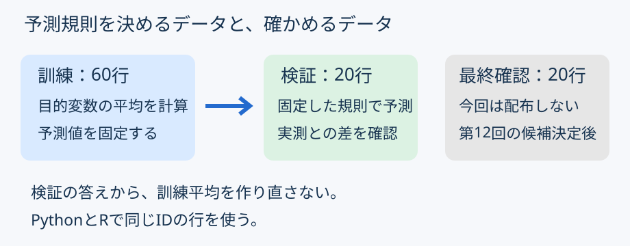
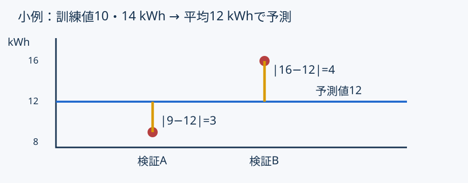
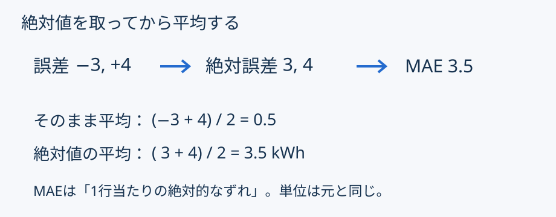

機械学習：平均による基準予測
0〜10分：準備・復習
予想 → 実行 → 小変更 → 独立した確認
| 既習 | 今回 |
|---|---|
| CSV・条件抽出 | 分割ラベルで行を選ぶ |
| 列の平均 | 訓練行だけの平均を使う |
| 独立した照合 | 対象ID・予測値・MAEを照合 |
詳しい復習先は学生ノート§4。
| 種類 | 問い |
|---|---|
| 回帰 | 数値はいくつか |
| 分類 | どの種類か |
| 教師なし学習 | どんなまとまりがあるか |
今日は消費電力量という数値を予測する。
10〜25分：概念と小例
| 列 | 意味・単位 |
|---|---|
| operating_hours | 稼働時間［時間］ |
| throughput_units | 処理量［個］ |
| energy_kwh | 目的変数［kWh］ |
| id / split | 照合用ID／分割ラベル |
稼働時間・処理量は、次回以降の説明変数候補。
今回は説明変数を使わない基準モデル。

学生ノート§3：分割は両言語で共通。


大小関係が必ず決まるわけではない。
lesson08.py → Python実行タスク。lesson08.R → Rファイル実行タスク。25〜50分：主例。読み方は学生ノート§4〜5。
表示末尾の丸め差と、内部計算の差を区別する。
| 主言語 | 完成する2本 |
|---|---|
| Python | exercise08.py ＋ verify.R |
| R | exercise08.R ＋ verify.py |
主言語は分析とCSV保存、他方は独立した照合。
50〜70分：必須演習。学生ノート§6。
| 列 | 内容 |
|---|---|
| id | 元の記録ID |
| energy_kwh | 実測値 |
| prediction_kwh | 訓練平均による一定予測 |
| absolute_error_kwh | 各行の絶対誤差 |
保存先：output/validation_predictions.csv
to_csv。select → 列追加 → write_csv。学生ノート§6に引数と戻り値を説明。
70〜80分：照合・説明。学生ノート§7。
E004・E005・E011
この3行の平均を20行のMAEと混同しない。
訓練60行で予測値を決め、検証20行で確認。 数値だけでなく、対象行と計算過程も確かめる。
80〜90分：提出・質問。学生ノート§8。
誤差を 二乗 → 平均 → 平方根。
合成データの結果から実設備の性能・因果は主張しない。
訓練で決める → 固定して予測 → 別の行で評価
詳しい説明・公式資料への参照：学生ノート。